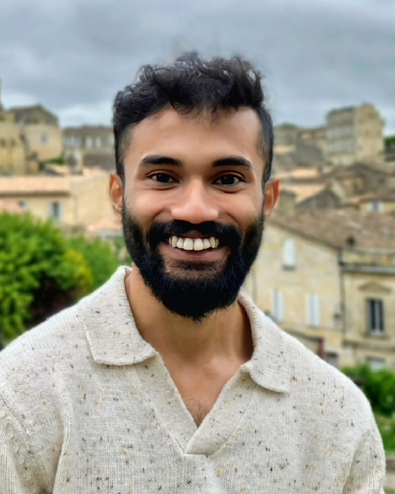

Annesh Pal
PhD candidate in Biostatistics at the University of Bordeaux, France
I am a statistical researcher, broadly interested in developing and applying probabilistic models to analyze high-dimensional biological data.
My research focuses on unsupervised learning for medical and health applications, with extensive use of R programming language to transcend the theoretical aspects into computational implementation.
Research interests
- Statistical modellingFor complex, high-dimensional data
- Bayesian nonparametricsDirichlet process and corresponding mixture models
- Unsupervised learningClustering and structure inference
- BiostatisticsAnalysis of transcriptomic data for biomedical applications
Upcoming
- Hiring: M2/Engineer Intern (details in LinkedIn)
- Invited talk at the CFE-CMStatistics conference in Berlin